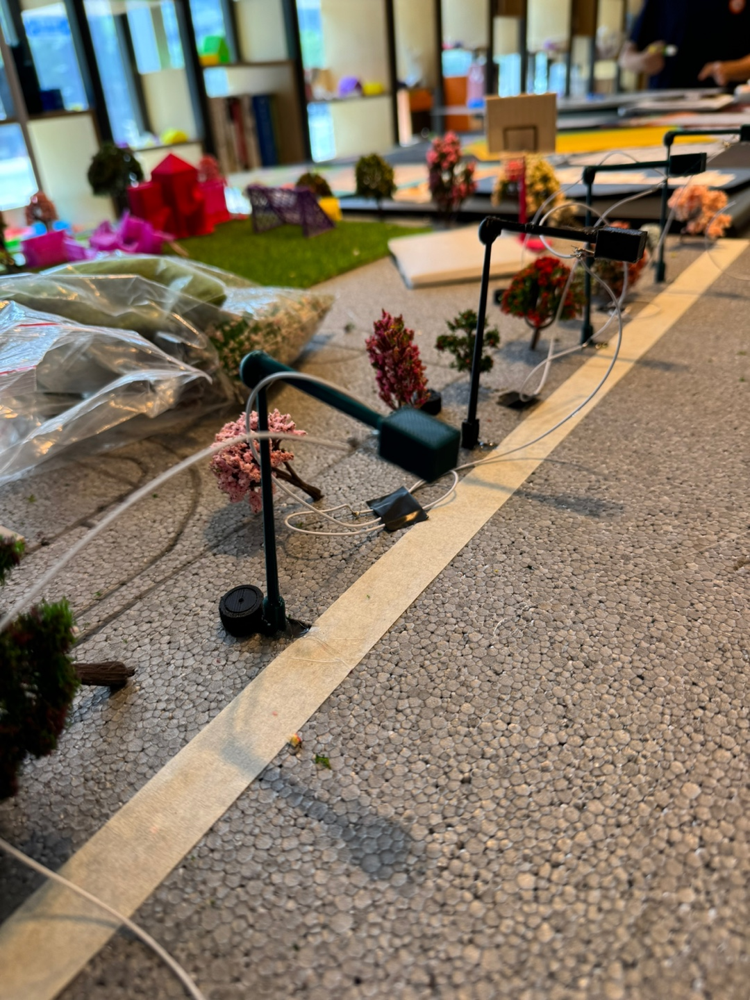
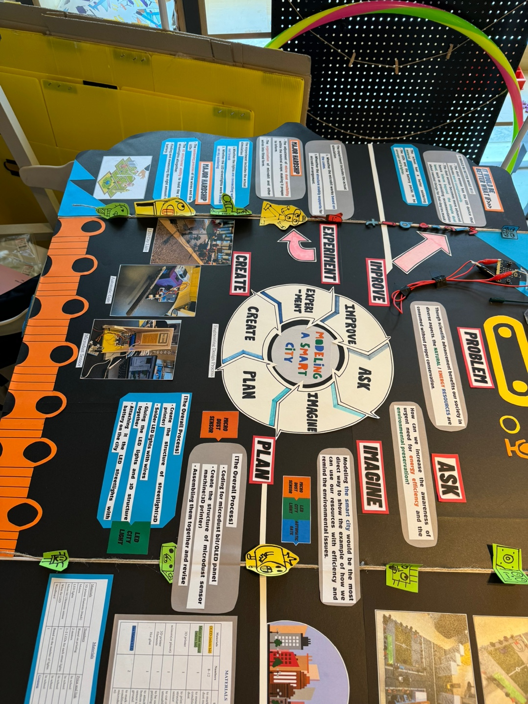
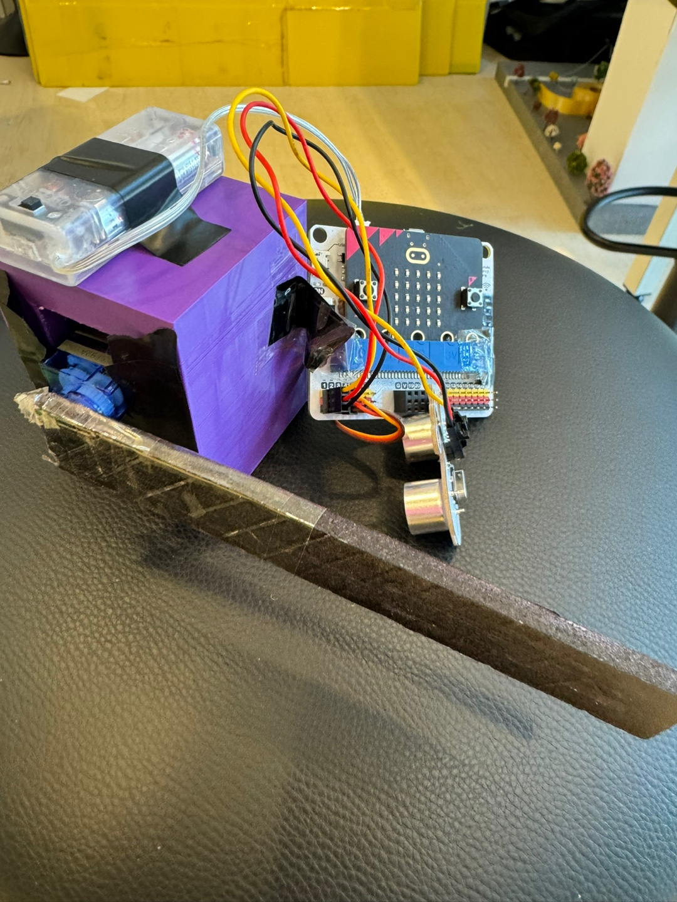

Stem fair 2024
These are the projects that I made for the STEM fair.
The 10th graders made the smart city and everyone had different jobs to do in the project. My job was to make the LED streetligts and the automatic gate.



engineering design process
Ask
How can we increase the awareness of urgent need for energy efficiency and the environmental preservation?
Imagine
Modeling the smart city would be the most direct way to show the example of how we can use our resources with efficiency and remind the environmental issues.
Plan
I would need 50 streetlights and learn how to solder and code the microbit.
Create
Create the structure of streetlight(3D printer)
Solder LED lights with wires
Gluing the LED lights and 3D structure together
Attaching it the LED streetlights with battery on the city
Experiment
The LED streetlights are all connected together and the 30 streetlights make the whole city bright. The automatic gate is a gate for the car that Alex Kim made. It has a motion sensor that can sense the motion of the car. If the car gets close enough to the gate, the motion sensor senses the car and immediately opens. It closes after 6 seconds. The struggle that I went through with this process was that it was my first time soldering so I got burnt several times and the 3D models weren’t strong enough.
Improve
It would be better if the school had a better soldering material and the LED should have been stronger.